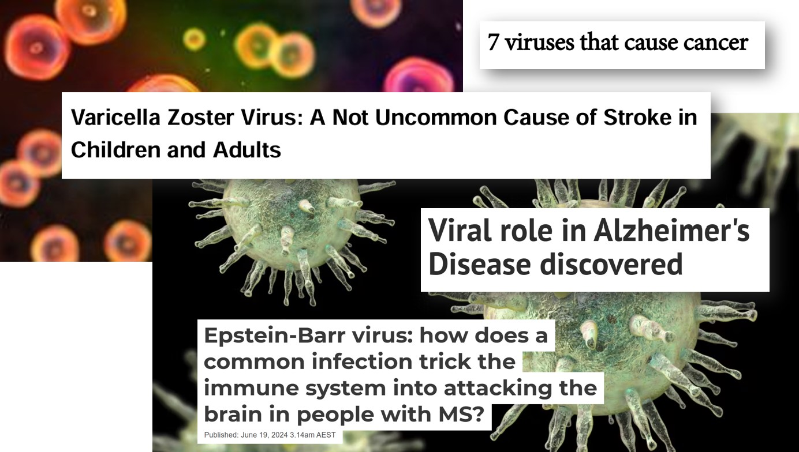
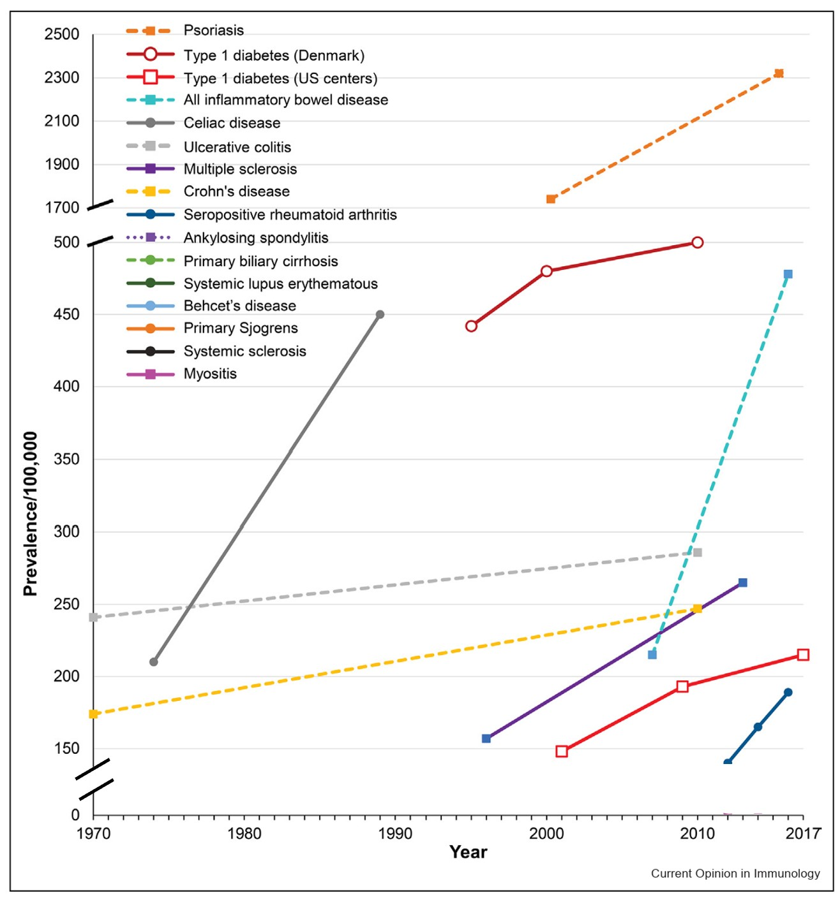
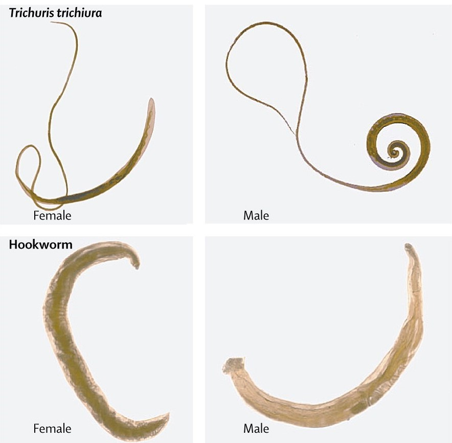
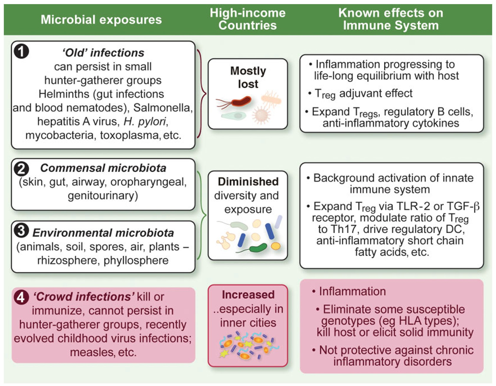

That which doesn’t kill you…
Some people compare the immune system to a muscle, suggesting that the more you use it, the stronger it gets. Who doesn’t love an analogy? But is this one accurate?
We can see that not all obstacles make you stronger. Destroy the cartilage in your knee, and it may never fully recover, since cartilage doesn’t grow back. Some bacterial infections can permanently scar the lining of the brain and leave survivors with lower IQs. More and more evidence is linking viruses to a range of diseases including multiple sclerosis, Alzheimer’s disease, dementia, type 1 diabetes, and certain types of cancer. When does illness make you stronger, and when does it cause permanent harm or leave you with chronic health conditions?
Our immune systems are amazing, and amazingly complex. Certain cells, called memory B cells and memory T cells, are able to “remember” invaders that they have seen before. They can rearrange their genes to create billions of possible memories and to respond more quickly to a future infection with the same pathogen. Is this an example of infection making you stronger? It depends. You can only catch the measles virus once, because you will form memory cells for it. But measles also destroys your pre-existing memory cells, meaning that you can now re-catch a bunch of other illnesses that you had already built immunity to. Also, a very small percentage of people (unvaccinated babies may have more risk) will seem to fully recover from measles, and then 6 to 15 years later develop brain inflammation that often leads to death.

Chickenpox is another disease that people typically only have once. However, the virus does not fully go away, but rather lies latent in the nervous system and can reactivate as shingles decades later. When the virus reactivates as shingles, it also leads to the formation of blood clots that raise the risk of stroke for months afterwards. So while you have “immunity” against getting chickenpox again, it has come with long-term risk. While chickenpox and measles are examples of viruses, bacteria can also lie latent for a long time after an infection. For instance, the bacteria types that cause epidemic typhus, brucellosis, and tuberculosis can all activate/reactivate long after initial infection.
Another informative example is Dengue virus, a potentially fatal mosquito-borne disease that affects millions of people annually. It has 4 different, but related types. This is a problem, because the memory your immune system forms to a given type will actually harm you if you get infected with a different type later. As a result, a person’s second dengue infection is more severe than their first. Having no memory of dengue is better than remembering the wrong version!
There is a lot of confusion on germs and illness. It is good to play in the dirt and to be exposed to microbes, but you should also wash your hands after using the toilet and avoid raw sewage. When is hygiene good and when is it bad? Recently, a recurring question in newspaper articles and parents groups is whether it was harmful to children’s immune systems that they stayed home in 2020 and caught fewer illnesses. Is there a correct amount or type of “training” that the immune system needs? To explore these questions, we first need to inspect a widely misunderstood idea, often referred to as the Hygiene Hypothesis.
The Hygiene Hypothesis
Allergies are a misfiring of the immune system– when it attacks what should be harmless environmental substances, such as pollen or dust. Autoimmunity is a different type of misfiring of the immune system– when it attacks our own cells, whether those are your neurons (multiple sclerosis), your joints (arthritis), your thyroid (Hashimoto’s disease), or your insulin-producing cells (type 1 diabetes). Both allergies and autoimmune diseases have risen dramatically in recent decades.

First proposed in 1989, the Hygiene Hypothesis offers an explanation for this dramatic rise. Certain types of microbes can help modulate our immune systems. By creating a low level of immune activity, they prevent our immune systems from getting bored and confused, which could lead them to attack the wrong target. Four main categories of pathogens that humans deal with are viruses, bacteria, fungi, and parasites. The evidence for pathogens that may be beneficial to the immune system is almost entirely for parasitic worms and friendly (commensal) bacteria. In contrast, many viruses can even trigger the onset of autoimmune diseases or allergies.
The reason for this makes sense: humans co-evolved with parasites and commensal bacteria, going back to when people lived in small hunter-gatherer tribes. For over 90% of human history, we lived as hunter-gatherers, and were exposed to very different types of microbes than we are now in crowded cities or poorly ventilated office buildings. Researchers have pointed out that the moniker Hygiene Hypothesis is misleading, and have proposed a more accurate alternative. The “Old Friends” mechanism describes which microbes we co-evolved with for 300,000 years.
Our old friends
Our bodies are full of peaceful (commensal) bacteria, which can help synthesize vitamins we need, regulate dopamine, and even protect us from infection. Most famously our guts, but also the skin, throat, and bladder, all have distinct microbiomes. Disruption due to antibiotic use, Western diets, and cesarean births has changed our microbiomes, contributing to the rise of autoimmunity and allergies. Not all bacteria are the same– the positive microbes transmitted in a vaginal birth are quite different from harmful bacteria like anthrax or tuberculosis.

Surprisingly, there are a number of studies showing that infections with helminths (parasitic worms) can be beneficial in treating allergies and autoimmune disease, including for multiple sclerosis. A proposed mechanism is that parasites provide a low-level of background activation for the immune system, which prevents excess activation. This in turn can prevent inflammatory and autoimmune disorders. However, helminth infections can also be harmful and are not something you should try at home! Researchers are developing therapies based on proteins derived from helminths.
“Crowd infections” are new in human history
Our “old friends” are organisms we co-evolved with for > 50,000 years. By evolving together, our bodies learned to take advantage of these organisms. Old friends can be contrasted with “crowd infections” which only developed much more recently, since 10,000 BCE, after people began to live in more densely populated townships.
A crowd infection is one that would not last in sparsely distributed, small hunter-gatherer groups, because it either kills people, or offers enough immunity until the small tribe has been infected and there is nowhere else to spread. For instance, if a small tribe of hunter-gatherers caught a strain of influenza, the virus would die out once they had all caught it in short order, with no more hosts to spread to. The ability to circulate through megacities or crisscross the globe through international travel in our current world offers influenza far more opportunities to infect and time to mutate. It is able to continue infecting and reinfecting, decade after decade. Even viruses that don’t mutate much, such as measles, are able to continue infecting, due to dense populations and an ongoing supply of new people being born.

Homo Sapiens first evolved some 300,000 years ago, yet crowd infections are believed to have only developed in the last 12,000 years, a small blip in human history. Humans living in dense cities is a relatively recent development. An even more recent development is that of sealed indoor spaces and frequent international air travel. Many crowd infections, such as measles, mumps, chickenpox, colds, and flu, are airborne, spreading when humans talk and breathe in close contact, with poor ventilation. These infections could not widely spread until the last few hundred years of human history.
When I began studying immunology, something that surprised me is how much of the immune system is focused on fighting parasites. There is an entire branch, including several cell types, devoted to this. It seems like such a mismatch to the modern, industrialized world. “Can I have a few more immune cell types focused on viruses or intracellular bacteria?” I thought, “in exchange for some of these parasite-focused cells that I’m not using??” Our “old friends” are quite different from the crowd infections that plague us now– it would be bizarre to assume that research based on one of these categories will apply to the other!
Old Friends Hypothesis is more descriptive than the Hygiene Hypothesis
Our “old friends” parasitic worms and beneficial microbes are associated with a reduced risk of allergies and autoimmune diseases. No such relationship exists for crowd diseases. In fact, the opposite is true. Crowd diseases contribute to allergies and autoimmune diseases. Comparing the immune system to a muscle that gets stronger with use is overly simplistic and, in many cases, inaccurate. There is huge variety in how various pathogens impact us. Being precise in considering different types of microbes and infections will allow us to better understand human health.
I look forward to reading your responses. Create a free GitHub account to comment below.